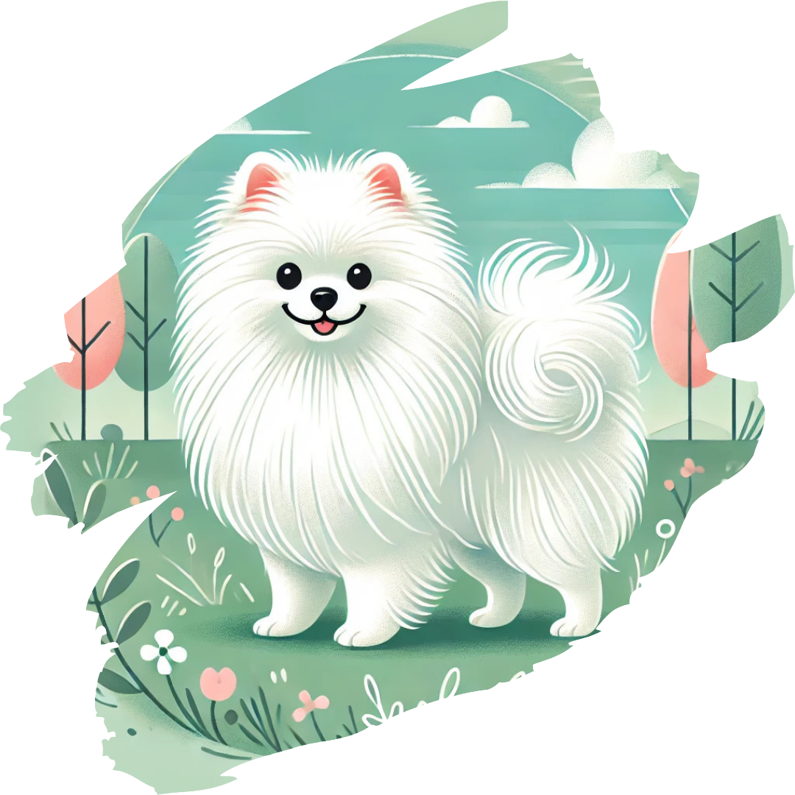
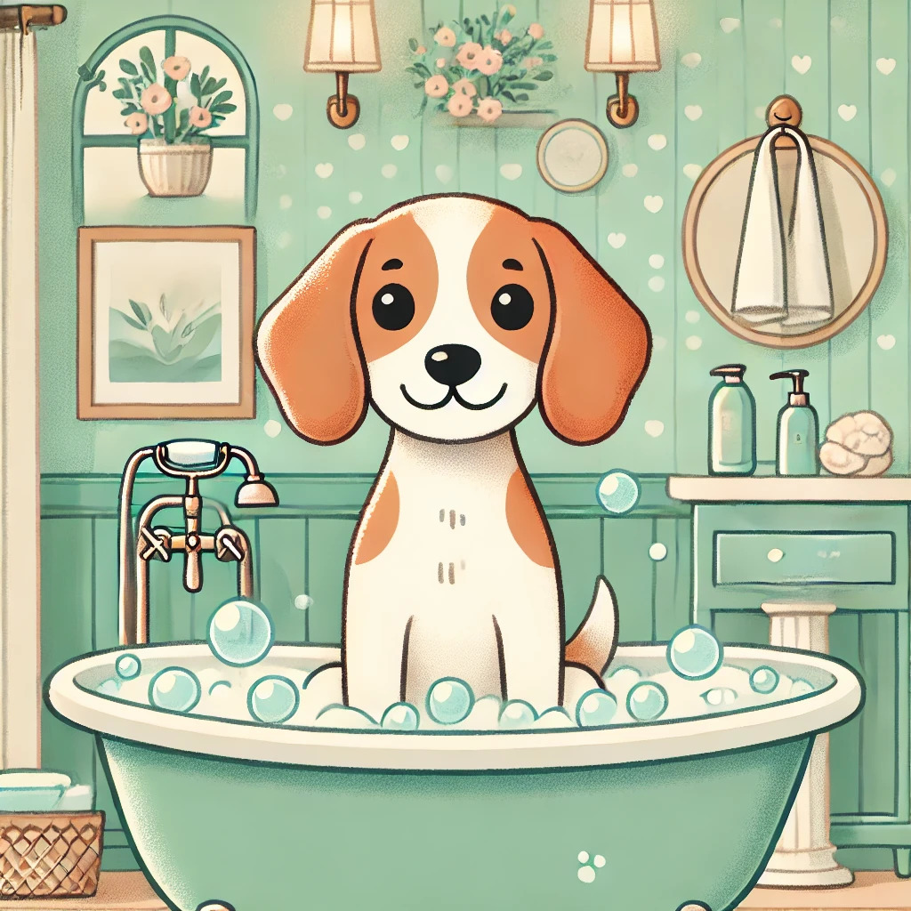
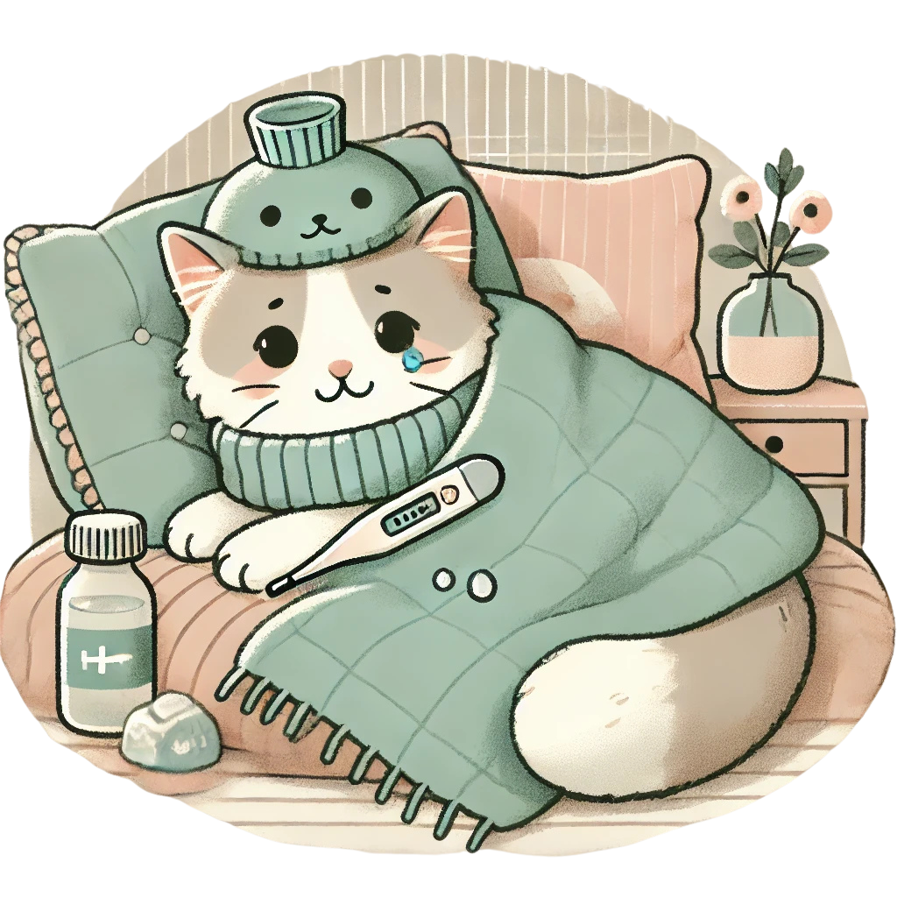

Sobre nós

O Happy Paws é um petshop dedicado a cuidar com amor e carinho dos seus bichinhos. Aqui você encontra tudo o que precisa para o bem-estar do seu pet!
Nossos Serviços

Banho e Tosa para seus pets, cuidado com higiene e estética.

Atendimento especial para cuidar dos seus pets, incluindo cuidados veterinários.